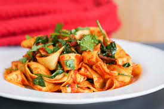

Spaghetti With Fresh Tomatoes

Description
A wonderful homemade tomato sauce made from fresh tomatoes, onion, garlic, and herbs.
Serve over spaghetti noodles, or use in your favorite lasagna recipe.
- Prep Time: 15 mins
- Cook Time 1 hr 5 mins
- Total Time 1 hr 20 mins
- Servings: 8
- Yield: 1 quart of sauce
Homemade Spaghetti Sauce Ingredients:
- Fresh tomatoes: Try to stick with plum tomatoes, like Roma, San Marzano, and cherry tomatoes.
Be sure to peel the tomatoes (and remove the seeds, if you like, but it's not necessary).
- White sugar: The sugar will balance out the acidity and give the sauce a hint of sweetness.
- Onion: Onions will add a depth of flavor to the sauce as they cook down.
- Spices: Garlic powder, basil, parsley, and salt will increase the flavor of the sauce.
We think the recipe is great as is, but some reviewers like to add additional spices, like oregano, red pepper flakes, or Italian seasoning.
Ingredients
- ¼ cup olive oil
- 1 onion, chopped
- ½ teaspoon garlic powder
- 4 pounds fresh tomatoes, peeled and chopped
- 1 tablespoon dried basis
- 1 tablespoon dried parsley
- 1 teaspoon salt
Steps
- Gather all ingredients.
- Heat olive oil in a large skillet over medium heat. Add onion and garlic powder; cook and stir until onion is translucent, about 5 minutes.
- Add tomatoes, sugar, basil, parsley, and salt; bring to a boil.
- Reduce heat and simmer, stirring occasionally, until sauce thickens, 1 to 2 hours.
- Serve hot and enjoy!
Nutrition Facts (per serving)
- 120g Calories
- 7g Fat
- 14g Carbs
- 3g Protein
Home